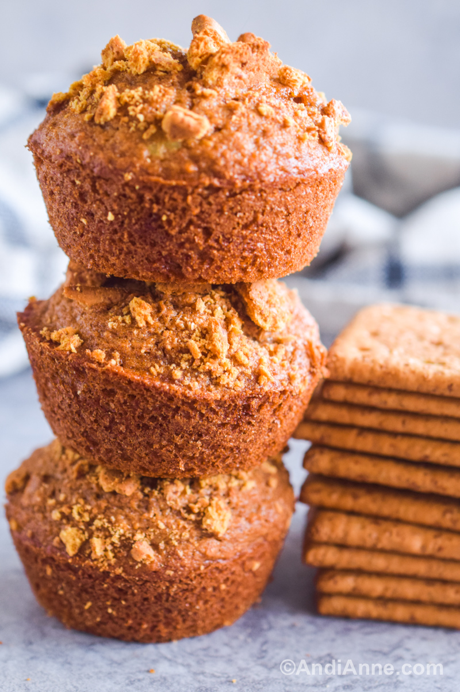

Graham Crackers Muffin

Description
A muffin is a chemically-leavened, batter-based bakery product. It's formulation is somewhere in between
a low-ratio cake and quick bread. Muffin batter is typically deposited or placed into deep, small cup-shaped pan before baking.
This gives the finished product a special “cupcake” or “mushroom-like” shape.
Ingredients
- 2 ½ cups graham cracker crumbs
- ¼ cup white sugar
- 2 teaspoons baking powder
- 1 cup whole milk
- 1 egg, slightly beaten
- 2 tablespoons honey
Step-by-step
- Preheat oven to 400 degrees F (200 degrees C). Grease 10 muffin cups or line with paper muffin liners.
- In a large bowl, combine cracker crumbs, sugar and baking powder. Stir in milk, egg and honey; mixing just until moistened. Spoon batter into prepared muffin cups.
- Bake in preheated oven for 15 to 18 minutes, until a toothpick comes out clean. Let stand for 5 minutes, then move to a wire rack to cool completely.